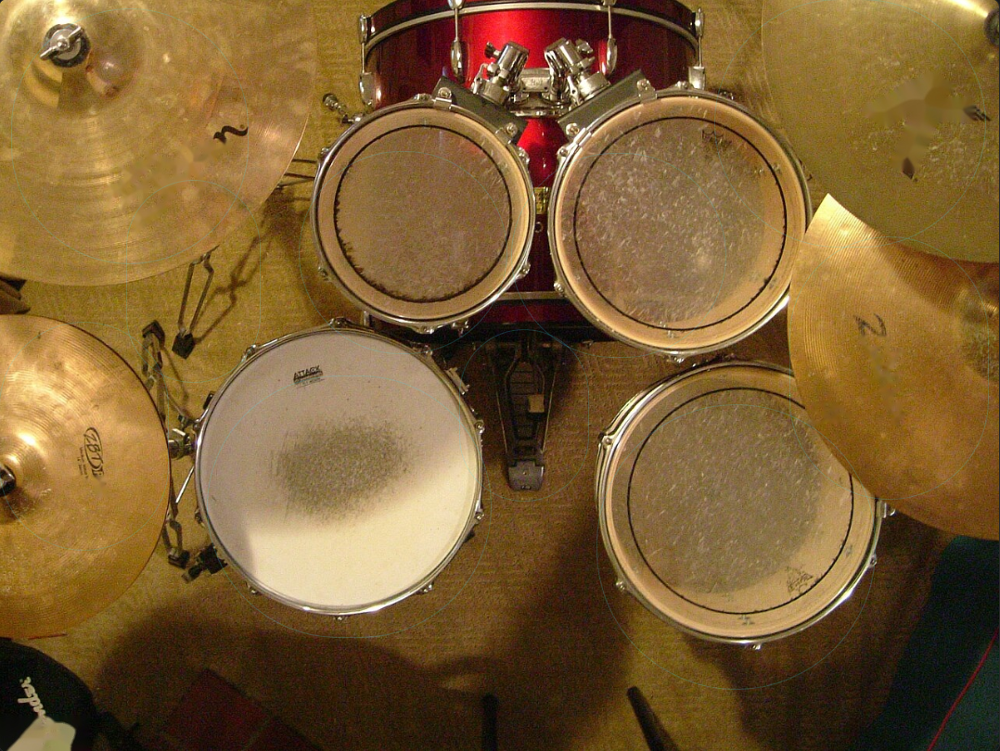

unibo09 Lab
Local LLM & Image Generation enthusiast


About My Environment
AMD RX 9070 XT (16GB) と NVIDIA RTX 3060 (12GB) による28GB VRAM環境をベースに、Codex / NotebookLM を活用した「知識管理の自動化」を実践しています。
Latest Reports

WEB APP
Netlify
ブラウザで叩けるドラムアプリ試作版
キーボードで演奏できるWebドラム。録音、譜面表示、再生、MIDI出力、4/8/16ビートやロック・ポップ・ヒップホップのプリセットに対応。
アプリを開く
BUILD
note.com
自宅PCに「28GBのローカルAI」を作った話 〖前編〗
RX 9070 XT + RTX 3060で合計28GB VRAM環境を作るためのハードウェア構成と取り付け作業の記録。
記事を読む
LATEST
note.com
自宅PCに「28GBのローカルAI」を作った話【後編】
AMD RX 9070 XT と NVIDIA RTX 3060 のデュアルGPU構成で Qwen2.5-72B Q2_K（27.8GB）を自宅PCで動かした記録。llama.cpp と ComfyUI のセットアップ、利点と課題まで。
記事を読む
BUILD
note.com
RX 9070 XT + RTX 3060 デュアルGPU構築記——最適な構成への記録
28GB VRAMを実現するためのパーツ選びから設定まで、試行錯誤の全記録。
記事を読む
SETUP
note.com
ClaudeCodeとCodexを1台のWindowsに同居させた話
認証競合、CRLF問題、起動スクリプト統合まで、Windows環境でClaudeCodeとCodexを安定運用するための記録。
記事を読む
AUTOMATION
note.com
Claude CodeからCodexへ「貼り付けまで自動、送信は手動」で渡す運用を作った
Windows上でClaude CodeからCodexへ作業指示を渡す半自動ブリッジ。PowerShellで貼り付けまで自動化し、送信は手動にして誤送信を防ぐ運用の記録。
記事を読む
WORKFLOW
note.com
CodexからNotebookLMを使い、作業メモを再利用できる知識へ
Playwrightによる自動操作とPDF運用を組み合わせ、知識ベースへの登録を自動化した記録。
記事を読む
LLM
note.com
Googleの新ローカルLLM「Gemma 4」をRX 9070 XTで動かしてみた
最新のGemma 4を、構築した28GB VRAM環境で徹底検証。AMD環境での推論速度をレポート。
記事を読む